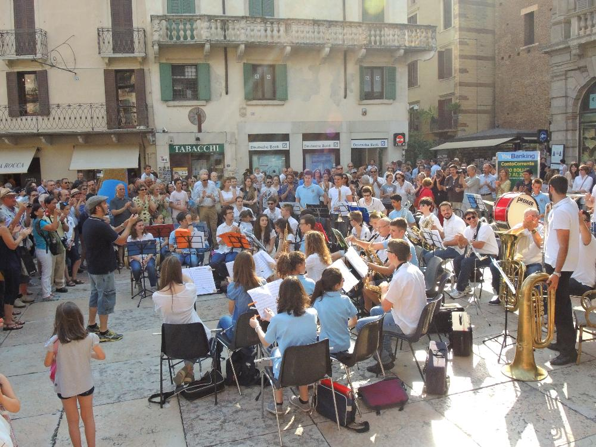
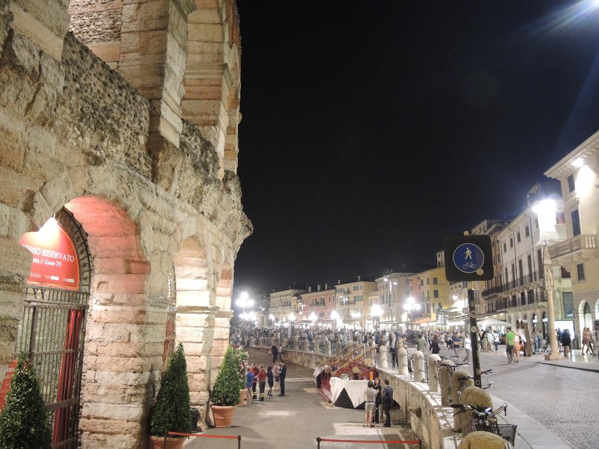

Верона. Шестой день.
21.06.2014
- Поедка в центр Вероны на Панде
- Arena de Verona или где посмотреть оперу
- Монтеки и Капулетти, мосты и замки, гробницы и амфитеатры
21.06.2014
По дороге встретили соотечественников
Вот такие штуки нужны для оплаты парковки
Одно из главных достопримечательностей Вероны - Арена де Верона. Даже самый злостный нелюбитель оперы наверняка захочет послушать ее, потому что это магическое место. Мне кажется здесь даже Джастин Бибер будет петь монументально!
Взирая на саму сцену арены легко представить гладиаторов
Вот так все выглядит с самой высокой ступеньки арены
И самому хочется схватить невидимый меч и зарубить невидимого противника
В таком виде на Оскар не пустит секюрити
-Че это не пустит?
Джульетта?
-Мне пожалуйста нудлов, только смотрите чтоб больших.
-Это зеленые макароны
Наконец-то, Натальетта в гостях у Джульетты
Это все нажевала Джульетта пока ждала Ромео
Тот самый знаменитый балкон, где Джульетта ждала Ромео и хранила лыжи, санки, пару старых табуретов и соленья.
 Отцы сражаются за то, чтобы именно их ребенок лопнул мыльный пузырь.
Взрослые даже как-то больше радовались.
Отцы сражаются за то, чтобы именно их ребенок лопнул мыльный пузырь.
Взрослые даже как-то больше радовались.
 Уличный оркестр, который играл ACDC.
Скалигеры, они в свое время натворили делов в Вероне... Про них как раз и поется "Короли ночной Вероны..."
Воронежский птиц
Очередная подборка авто
Кусок Кремля
Рэйнжер
 Молодожены также как у нас ходят по мостам и фоткаются.
Молодожены также как у нас ходят по мостам и фоткаются.
Парковка по-русски. Замаскировали панду под мусорный бак.
Итальянская усадьба Винивитиных.
 Не смогли удержаться
Не смогли удержаться
 А в то время в арене(я про арена де Верона, а не ТРК) началась опера "Кармен". Оказывается каждое лето здесь проходит оперный фестиваль.
Мы еще никогда в жизни так неы хотели на оперу! Но билетов, увы, для нас уже не осталось(
И на последочек, по пути домой: итальянки любят ездить на мопедах в платьях.